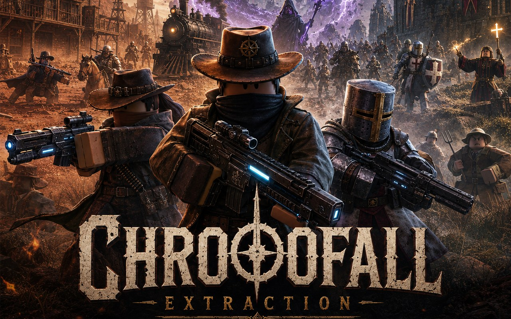

An extraction shooter set across the broken timelines left behind when history stopped holding still.

Earth ran out. Its resources spent, its future narrowing, humanity found something stranger than salvation: unstable rifts tearing into fractured worlds where history never settled into one line. Medieval keeps stand a few hundred feet from frontier saloons. Old magic collides with machinery nobody remembers building. Whole eras sit tangled together, untouched and unclaimed, waiting for whoever is willing to walk in after them.
You're one of the extractors sent to do exactly that. Get in, grab what the rift is hiding, and reach the extraction point before the timeline folds in on itself. No two runs play out the same way. One raid you're dodging outlaws with black powder rifles, the next you're up against knights guarding a relic they'll die for, or a wizard bending the ground itself, or a crew of rival extractors who want the same haul you do. Every shot fired and every extra second spent inside the rift raises the stakes. Only the ones who make it out keep what they found.
The rifts aren't getting smaller. The timelines aren't getting steadier. This is the start of something a lot bigger than one expedition, and the hardest part isn't surviving the next raid. It's knowing when to leave, before history decides to close the door on you.